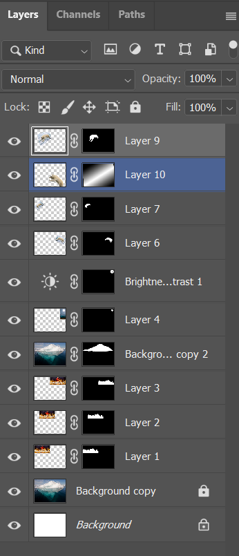
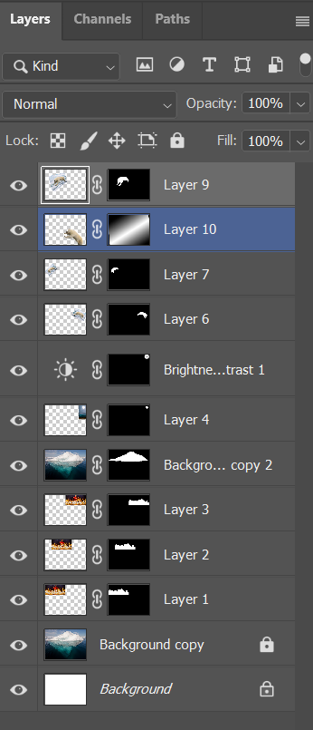

For my Environmental photomontage i chose the topic of global warming/ melting glaciers causing polar bears to lose their home. I use 3 layers for the background, the original background, the line of fire and an iceberg that i a copy of an iceberg i masked from the orginal bacckground which i overlayed with where it would be originally over the fire. I used a a transparent gradient on a polar bear to show that it's in water. (at the time of writing this im having trouble replicating this)
For Social I chose privacy as my topic. I show that my displaying a giant eye over phone users, as many things we do on our phones are not completely private due to cookies as well as just us posting anything.